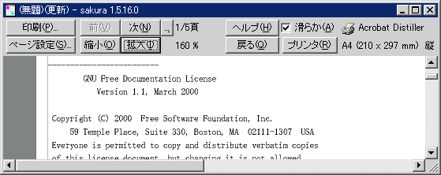
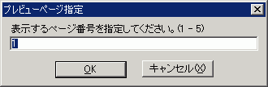

印刷プレビュー
印刷プレビュー表示します。

- [印刷] を押すと、印刷できます。
- [ページ設定] を押すと、印刷ページ設定ができます。
- [前頁] [次頁] でページを前後に行き来できます。
- [...] プレビューしたいページを指定します。

- [縮小] [拡大] で10%〜400%まで10%刻みで縮小または拡大表示できます。
- [ヘルプ] でここを表示します。
- □滑らか なめらかなプレビュー表示をします。(Win2000以降)
プレビューと実際の印刷のイメージの違いが改善されます。
- [戻る]でプレビューを終了し、編集ウィンドウに戻ります。
- [プリンタ] でプリンタの設定を行えます。
- ヘッダー及びフッターは印刷ページ設定で指定できます。
- 印刷中は[キャンセル]で中断できます。

■マクロ構文
・構文: PrintPreview( );
・記録: ×